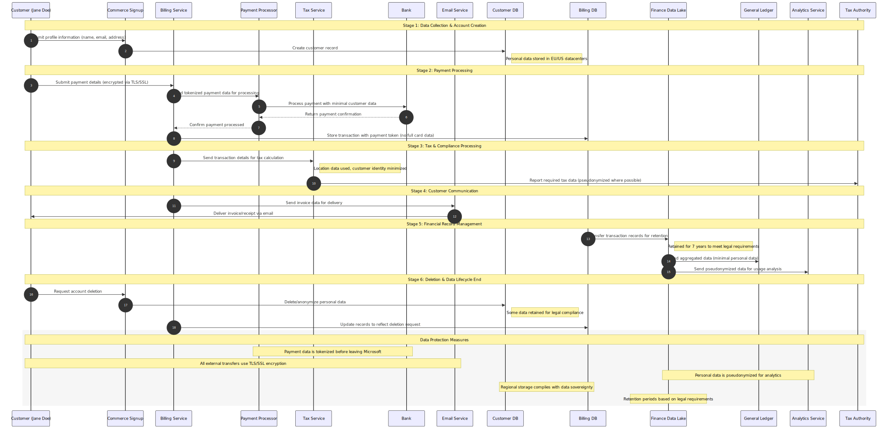

Commerce Financial Platforms (CFP) - High Level Data Flow Overview
This diagram provides a high-level overview of personal data flows through Microsoft's Commerce Financial Platforms (CFP) system, from collection to deletion.
flowchart LR
%% Define styles
classDef external fill:#f9f,stroke:#333,stroke-width:2px
classDef process fill:#bbf,stroke:#333,stroke-width:1px
classDef datastore fill:#dfd,stroke:#333,stroke-width:1px,shape:cylinder
classDef sensitiveData fill:#fcb,stroke:#f66,stroke-width:2px
classDef encrypted fill:#cfc,stroke:#393,stroke-width:1px
%% External entities
Customer(["Customer (Jane Doe)"]):::external
PaymentProcessor(["Payment Processor"]):::external
TaxAuthority(["Tax Authority"]):::external
Bank(["Bank"]):::external
EmailService(["Email Delivery Service"]):::external
%% Internal processes
CommerceSignup["Commerce Signup Service"]:::process
BillingService["Billing Service"]:::process
TaxService["Tax Service"]:::process
AnalyticsService["Analytics Service"]:::process
%% Data stores
CustomerDB[("Customer Info Database - Names, Contact details, Account IDs")]:::datastore
BillingDB[("Billing Database - Transactions, Payment tokens, Addresses")]:::datastore
FinanceDataLake[("Finance Data Lake - Transactions (with customer IDs), Usage data (pseudonymized)")]:::datastore
GeneralLedger[("General Ledger System - Aggregated financial data, Limited personal data")]:::datastore
subgraph MicrosoftBoundary["Microsoft Internal Systems"]
CommerceSignup
BillingService
TaxService
AnalyticsService
CustomerDB
BillingDB
FinanceDataLake
GeneralLedger
end
%% Data flows (all edge labels are now single-line)
Customer -->|"Profile info to signup"| CommerceSignup
CommerceSignup -->|"Create account in DB"| CustomerDB
Customer -->|"Payment details to billing"| BillingService
BillingService -->|"Tokenized payment to processor"| PaymentProcessor
PaymentProcessor -->|"Payment confirmation"| BillingService
BillingService -->|"Transaction data to DB"| BillingDB
BillingService -->|"Tax calculation data"| TaxService
TaxService -->|"Tax obligation data"| TaxAuthority
BillingService -->|"Payment instruction to bank"| Bank
BillingService -->|"Invoice data to email service"| EmailService
EmailService -->|"Billing email to customer"| Customer
BillingDB -->|"Financial records to data lake"| FinanceDataLake
FinanceDataLake -->|"Aggregates to ledger"| GeneralLedger
FinanceDataLake -->|"Usage patterns to analytics"| AnalyticsService
%% Additional notes about data regions and retention (single-line)
BillingDB -.->|"EU/US datacenter copy"| BillingDB
FinanceDataLake -.->|"Retention: 7 years for tax/legal"| FinanceDataLake
CustomerDB -.->|"Deleted on request (legal exceptions)"| CustomerDB
#
Sequence of Operations
The following sequence diagram illustrates the chronological flow of personal data through the Commerce Financial Platforms system, highlighting the interactions between different components and the lifecycle stages of data.

Legend
This data retention & deletion flow diagram illustrates:
This data flow diagram illustrates:
1.
Data Stores: Represented as cylinders showing what personal data is stored in each system
2.
Data Flows: Shown as arrows with labels indicating what personal data moves between components
3.
External Entities: Shown as rounded rectangles outside Microsoft's boundary
4.
Trust Boundary: Microsoft's internal systems are enclosed in a subgraph
5.
Flow Sequence: Numbered from 1-14 showing the progression of data from collection to analytics
6.
Data Protection Notes: Includes encryption indicators and regional storage information
Key Data Protection Points:
- Personal payment data is tokenized before leaving Microsoft systems
- All external data transfers use TLS/SSL encryption
- Personal data is pseudonymized when used for analytics
- Regional data storage complies with data sovereignty requirements
- Retention periods are defined based on legal requirements
Lifecycle Overview
The Commerce Financial Platforms system processes personal data through distinct stages:
1. Collection: Customer provides personal information during signup and purchase
2.
Processing: Data is used to process payments, calculate taxes, and deliver products
3.
Storage: Information is stored according to purpose-based retention policies
4.
Sharing: Minimal necessary data is shared with external parties like payment processors
5.
Deletion: Customer data is removed or anonymized upon request or after retention periods